EE 6502-MICROPROCESSOR AND MICROCONTROLLER
UNIT-I 8085 PROCESSORS
Introduction
8085 Microprocessor
- A CPU built into a single LSI/VLSI chip is called a microprocessor.
- A digital computer using microprocessor as its CPU is called a microcomputer.
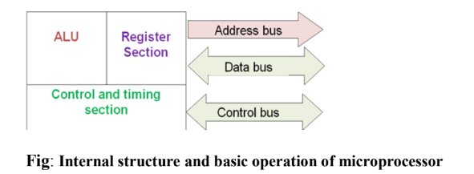
Fig: Internal structure and basic operation of microprocessor
📝 Important Exam Question
Draw and explain the architecture of 8085.
- The Intel 8085 is an 8-bit microprocessor introduced by Intel in 1977.
- The 8085 microprocessor is an 8-bit processor available as a 40-pin IC package and uses +5 V for power.
- It can run at a maximum frequency of 3 MHz.
- Its data bus width is 8-bit and address bus width is 16-bit, thus it can address 216 = 64 KB of memory.
- The internal architecture of 8085 is shown in figure.
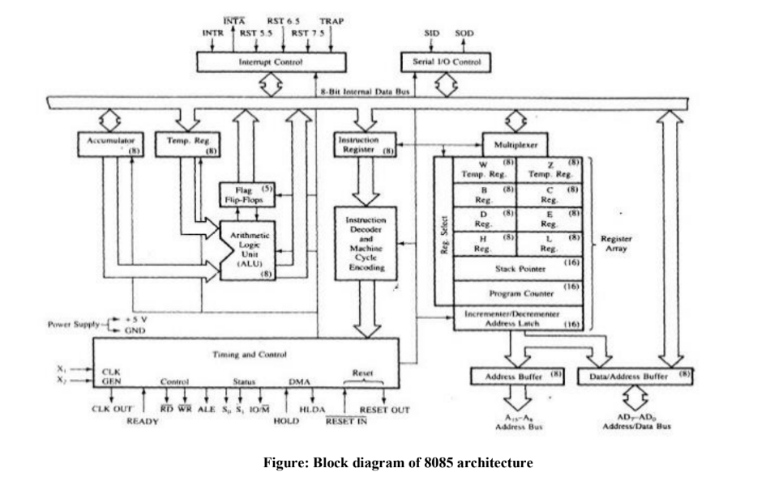
Figure: Block diagram of 8085 architecture
2
1. Timing and Control unit
- This unit synchronizes all the microprocessor operations with the clock and generates control signals necessary for communicate between microprocessor and peripherals.
- The RD.WR signals: are sync pulses indicating the availability of data on data bus.
2. Arithmetic Logic Unit
- The ALU performs the actual numerical and logic operation such as ‘add’, ‘subtract’, ‘AND’, ‘OR’, etc.
- It uses data from memory and from Accumulator to perform arithmetic.
- It always stores result of operation in Accumulator.
3. Register Array
- The 8085 includes six registers, one accumulator and one flag register. In addition, it has two 16-bit registers: stack pointer and program counter.
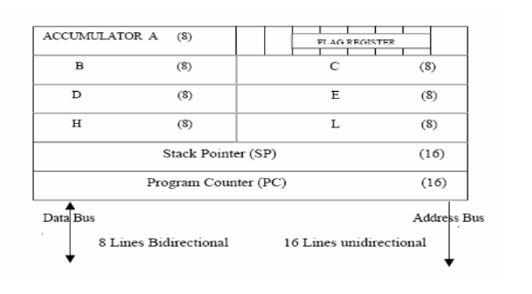
- The 8085 has six general-purpose registers to store 8-bit data; these are identified as B, C, D, E, H, and L.
- They can be combined as register pairs - BC, DE, and HL - to perform some 16-bit operations.
- The programmer can use these registers to store or copy data into the registers by using data copy instructions.
- The HL register pair is also used to address memory locations.
- The accumulator is an 8-bit register that is a part of ALU. This register is used to store 8-bit data and to perform arithmetic and logical operations. The result of an operation is stored in the accumulator. The accumulator is also identified as register A.
- Program Counter: Deals with sequencing the execution of instructions. Acts as a memory pointer.
- Stack Pointer: Points to a memory location in R/W memory, called the stack.
4. Instruction register and Decoder
Instruction register:
- It is an 8-bit register that temporarily stores the current instruction of a program. Latest instruction sent here from memory prior to execution.
3
- Decoder then takes instruction and decodes or interprets the instruction. Decoded instruction then passed to next stage.
Flag register:
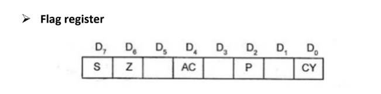
- The ALU includes five flip-flops, which are set or reset after an operation according to data conditions of the result in the accumulator and other registers.
- They are called Zero (Z), Carry (CY), Sign (S), Parity (P), and Auxiliary Carry (AC) flags.
- CY-Carry flag: If the sum in the accumulator is larger than eight bits, the flip-flop uses to indicate a carry called the Carry flag (CY) is set to one.
- Z-Zero flag: When an arithmetic operation results in zero, the flip-flop called the Zero (Z) flag is set to one.
- AC-auxillary carry flag: In arithmetic operations, when a carry is generated by Digit D4 and passed to D5, the AC Flag is set.
- P-Parity flag: This flag is set when the result of the instruction has odd number of 1’s.
- S-Sign flag: In arithmetic operation with signed number, the D7 bit is reserved for indicating the sign.
- If D7 bit=1, the sign flag is set, and it indicates (-ve) number.
- If D7 bit=0, it indicates it is a (+ ve) number.
- The combination of the flag register and the accumulator is called Program Status Word (PSW) and PSW is the 16-bit unit for stack operation.
5. System bus
Data Bus:
- Data bus carries data in binary form between microprocessor and other external units such as memory.
- Data bus is bidirectional in nature.
- The data bus width of 8085 microprocessor is 8-bit.
Address Bus:
- The address bus carries addresses and is one way bus from microprocessor to the memory or other devices. 8085 microprocessor contain 16-bit address bus and are generally identified as A0 - A15.
- The higher order address lines (A8 – A15) are unidirectional and the lower order lines (A0 – A7) are multiplexed (time-shared) with the eight data bits (D0 – D7) and hence, they are bidirectional.
4
Control Bus: Control buses are various lines which have specific functions for coordinating and controlling microprocessor operations. Ex. read/Write controlline
6. Interrupt control
- Interrupt is a signal, which suspends the routine what the MP is doing, brings the control to perform the subroutines, completes it and returns to main routine. E.g. INTR, TRAP, RST 7.5, RST 6.5, RST 5.5
7. Serial I/O control
- It is used for serial data transmission and data bits are sent one bit at a time. The two signals used are
- SID (serial input data) and
- SOD (serial output data).
📝 Important Exam Question
Draw and explain pin diagram and functional block diagram of 8085.
Explain 8085 with signal diagram.
8085 Pin diagram
Figure shows 8085 pin configuration and functional 8085 Microprocessor Pin Diagram respectively.
The signals of 8085 can be classified into seven groups according to their functions.
5
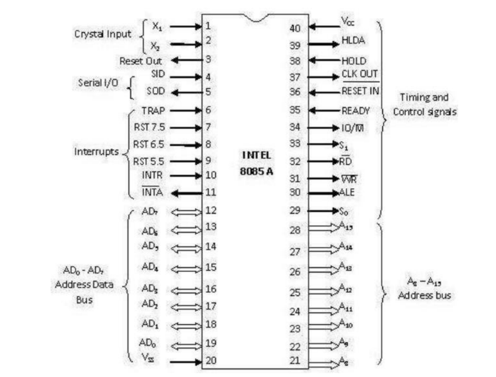
a)Pin configuration b)Functional pin diagram
Data and Addressbus
- A8 – A15 Address bus: it carries the most significant 8-bits of memory I/O address.
- AD7-AD0 (Multiplexed Address/data bus): It carries the least significant 8-bit address and data bus. These pins serve the dual purpose of transmitting lower order address and data byte. During 1st clock cycle, these pins act as lower half of address. In remaining clock cycles, these pins act as data bus
Control and status signals
These signals are used to identify the nature of operation. There are 3 control signal and 3 status signals.
- Three control signals are RD, WR & ALE.
- RD: This signal indicates that the selected IO or memory device is to be read and is ready for accepting data available on the data bus.
- WR: This signal indicates that the data on the data bus is to be written into a selected memory or IO location.
- ALE: It is a positive going pulse generated when a new operation is started by the microprocessor. When the pulse goes high, it indicates address. When the pulse goes down it indicates data.
6
- Three status signals are IO/M, S0 & S1.
- S1 & S0: S0 and S1 are called Status Pins. They tell the current operation which is in progress in 8085.
- IO/M: This signal is used to differentiate between I/O and Memory operations, i.e.
- when it is high indicates I/O operation and
- when it is low then it indicates memory operation.
These signals are used to identify the type of current operation.
Control and Status Signals
| Machine Cycle |
IO/M |
S1 |
S0 |
Control signals |
| Opcode Fetch |
0 |
1 |
1 |
RD=0 |
| Memory Read |
0 |
1 |
0 |
RD=0 |
| Memory Write |
0 |
0 |
1 |
WR=0 |
| I/O Read |
1 |
1 |
0 |
RD=0 |
| I/O Write |
1 |
0 |
1 |
WR=0 |
| Interrupt Acknowledge |
1 |
1 |
1 |
INTA=0 |
| Halt |
Z |
0 |
0 |
RD, WR=z and INTA=1 |
| Hold |
Z |
X |
X |
RD, WR=z and INTA=1 |
| Reset |
Z |
X |
X |
RD, WR=z and INTA=1 |
7
Power supply
There are 2 power supply signals VCC & VSS.
- VCC: indicates +5v power supply and
- VSS: indicates ground signal.
Clock signals
There are 3 clock signals, i.e. X1, X2, CLK OUT.
- X1, X2: A crystal (RC, LC N/W) is connected at these two pins and is used to set frequency of the internal clock generator. This frequency is internally divided by 2.
- CLK OUT: This signal is used as the system clock for devices connected with the microprocessor.
Interrupts & externally initiated signals
Interrupts are the signals generated by external devices to request the microprocessor to perform a task. There are 5 interrupt signals, i.e. TRAP, RST 7.5, RST 6.5, RST 5.5, and INTR. We will discuss interrupts in detail in interrupts section.
- INTA: It is an interrupt acknowledgment signal.
- RESET IN: This signal is used to reset the microprocessor by setting the program counter to zero.
- RESET OUT: This signal is used to reset all the connected devices when the microprocessor is reset.
- READY: This signal indicates that the device is ready to send or receive data. If READY is low, then the CPU has to wait for READY to go high.
- HOLD: This signal indicates that another master is requesting the use of the address and data buses.
- HLDA (HOLD Acknowledge): It indicates that the CPU has received the HOLD request and it will relinquish the bus in the next clock cycle. HLDA is set to low after the HOLD signal is removed.
Serial I/O signals
There are 2 serial signals, i.e. SID and SOD and these signals are used for serial communication.
- SOD (Serial output data line): The output SOD is set/reset as specified by the SIM instruction.
- SID (Serial input data line): The data on this line is loaded into accumulator whenever a RIM instruction is executed.
8
Five Hardware Interrupts in 8085
- TRAP: is a non-maskable interrupt
- RST 7.5: is an edge triggered interrupt.
- RST 6.5: is a maskable and level triggered interrupt
- RST 5.5: is a maskable and level triggered interrupt
- INTR: is a non-vectored interrupt
3. Memory Organization (R/W Memory)
Memory is an essential component of a microcomputer system. It stores binary instructions and data for the microprocessor. There are two types of memory: Read/Write Memory(R/WM) and Read-only Memory (ROM). The 8085 has 16 address lines. That means it can address upto 216=64 Kbytes.
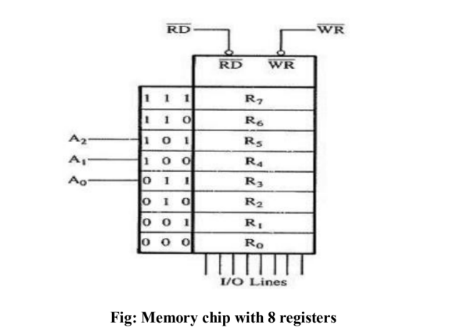
Fig: Memory chip with 8 registers
To communicate with memory, the MPU should be able to:
- 1. identifies the memory location (with address)
- 2. Generates timing and control signal
- 3. Data transfer takes place.
The MPU uses the CS line to select the chip, and the R/W line to control data flow.
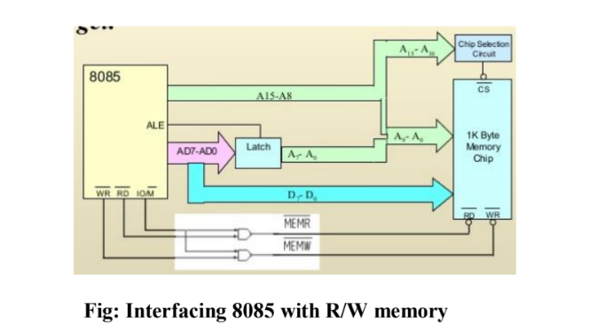
Fig: Interfacing 8085 with R/W memory
9
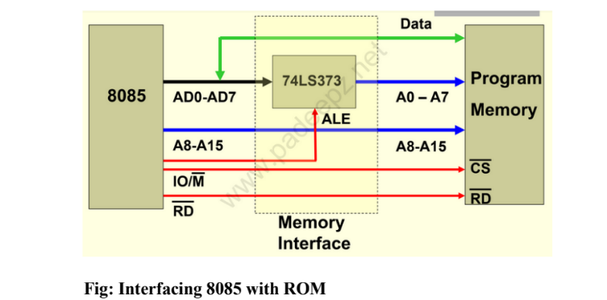
Fig: Interfacing 8085 with ROM
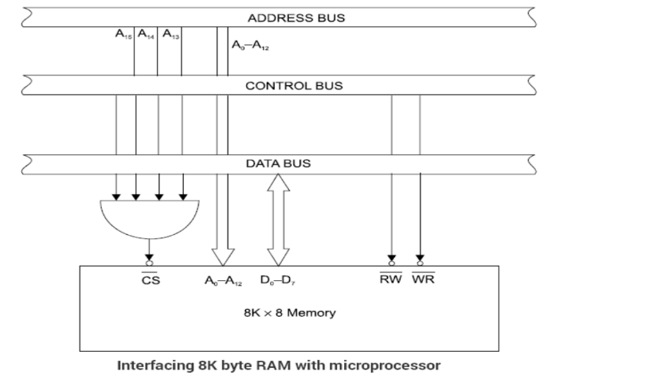
Fig: Interfacing 8K byte RAM with microprocessor
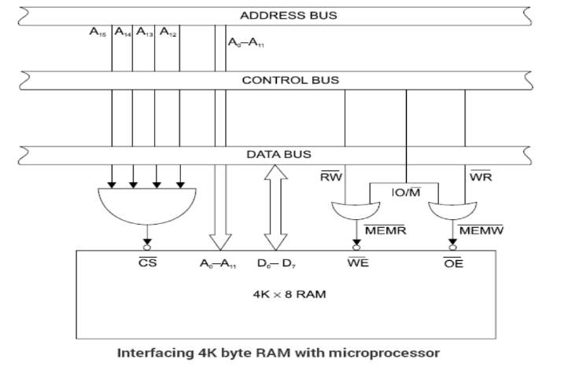
Fig: Interfacing 4K byte RAM with microprocessor
10
How the MPU writes into and Read from memory?
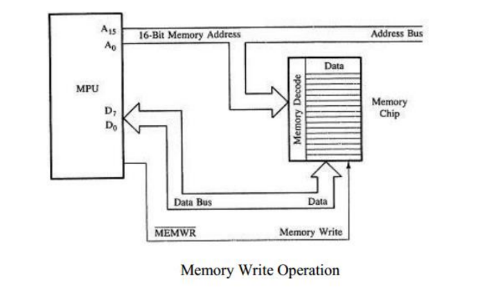
Memory Write Operation
To write a byte into a memory location from 8085 MPU:
- 1. Places the 16-bit address on the address bus of the memory location where a byte is to be stored. This address is decoded to select the memory chip, and the memory register is identified.
- 2. Places the byte on the data bus.
- 3. Sends the control signal (to enable the input buffers of the memory) and then stores the byte.
To read from memory, the steps are similar:
- 1. The MPU places the 16-bit address on the address bus and sends the control signal to enable the output buffer of the memory chip.
- 2. The interfacing logic of the memory chip decodes the address and selects the appropriate memory register.
- 3. The memory chip places the data byte on the data bus, and the MPU reads the data byte.
📝 Important Exam Question
Explain I/O Interfacing in 8085.
4. 8085 Interfacing with I/O devices
There are various communication devices like the keyboard, mouse, printer, etc. So, we need to interface the keyboard and other devices with the microprocessor by using latches and buffers. This type of interfacing is known as I/O interfacing.
Microprocessor needs to Identify I/O devices with binary number. I/O devices can be interfaced in three steps.
- 1. Identify the memory location (with address).
- 2. Generate timing and control signal.
- 3. Data transfer takes place.
11
The techniques used for I/O interfacing are:
- 1. Memory mapped I/O
- 2. I/O mapped I/O or Peripheral mapped I/O
1. Memory-Mapped I/O
- In memory mapped I/O, each device has an address just like a memory location.
- The memory map (64K) is shared between I/O device and system memory.
- Instructions STA, LDA and MOV are used for data transfer.
- Device is identified by 16-bit address (Space ranges from 0000H – FFFFH).
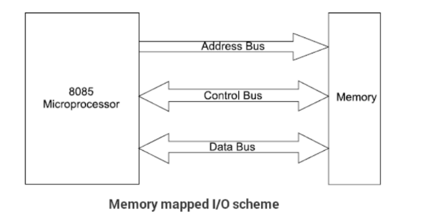
Memory mapped I/O scheme
2. Peripheral Mapped I/O
- 256 input device and 256 output device can be connected.
- It has separate numbering scheme for I/O devices.
- Instructions IN & OUT are used for data transfer.
- Device is identified by 8-bit address (Space ranges from 00H – FFH).
Device Selection and Data Transfer
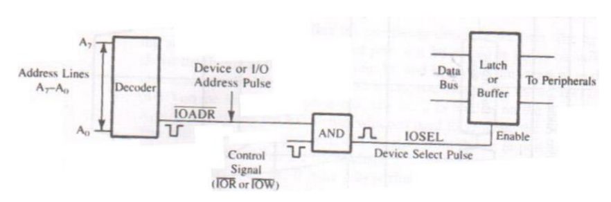
Data transfer steps
For data transfer from input device to processor the following operations are performed:
- 1. The MPU places an 8-bit device address on address bus then decoded.
- 2. The MPU sends a control signal (IOR or IOW) to enable the I/O device.
- 3. Data are placed on the data bus for transfer.
Data transfer from processor to output device the following operations are performed.
To send data to O/P device:
- 1. The MPU places the device address (output port no.) on the address bus.
12
- 2. The MPU places data on data bus.
- 3. The MPU enables the output device using the control signal (IOW).
- 4. The O/P device latches and displays data (if O/P = LED). The other peripherals that are not enabled remain in a high impedance state called (tri-state).
Comparison between Memory mapped I/O and Peripheral mapped I/O
| Memory mapped I/O |
I/O mapped I/O |
| It uses 16 bit address |
It uses 8 bit address |
| Memory related instructions MOV, LDA, STAX are used |
I/O related instructions IN and OUT are used |
| Data transfer between any register and I/O |
Data transfer between accumulator and I/O |
| More hardware is needed to decode 16 bit address |
Less hardware is needed to decode 8 bit address |
| Memory map 64K is shared |
256 I/P devices & 256 O/P devices are shared. |
📝 Important Exam Question
Write short notes on Data transfer concept
4.2. Data Transfer Concepts
- The 8085 microprocessor is a parallel device. That means it transfers eight bits of data simultaneously over eight data lines (parallel I/O mode).
- However in many situations, the parallel I/O mode is either impractical or impossible. For example, parallel data communication over a long distance becomes very expensive.
- Similarly, parallel data communication is not possible with devices such as CRT terminal or Cassette tape etc
Types of Data transfer scheme
Data transfer between microprocessor to memory and microprocessor to I/O devices is explained in the following ways. The data transfer can be classified into:
- 1. Parallel data transfer
- 2. Serial data transfer
I. Parallel data transfer
Parallel data transfer scheme is faster than serial I/O transfer. in parallel data transfer 8-bit data send all together with 8 parallel wire. It is further divided into:
13
- Programmed I/O
- Interrupt I/O
- DMA
Programmed I/O:
- Here the processor has to check whether the I/O device is ready or not through the Ready signal of the I/O device.
- If the ready signal is high then it will send the data to the I/O device.
- Otherwise it will continuously check the Ready signal.
- The processor is busy in checking the Ready signal.
- The drawback is wastage of time.
Interrupt I/O:
- In this method the I/O device will interrupt the Processor through the INTR signal to indicate to the processor that it is ready to accept the next data.
- Then the processor will send the INTA signal.
- Then the processor stops its normal execution and start transferring the data to the I/O device.
DMA:
- Using DMA I/O device can directly transfer the data to the Memory using the Address and Data buses of Processor.
II. Serial data Transfer
- Some of the external I/O devices receive only the serial data. Normally serial communication is used in the Multiprocessor environment.
- In serial I/O mode transfer a single bit of data on a single line at a time. For serial I/O data transmission mode, 8-bit parallel word is converted to a stream of eight serial bit using parallel-to-serial converter.
- Similarly, in serial reception of data, the microprocessor receives a stream of 8-bit one by one which are then converted to 8- bit parallel word using serial-to-parallel converter. 8051 has two pins for serial communication.
- SID: Serial Input data.
- SOD: Serial Output data.
📝 Important Exam Question
Explain the interrupt structure of 8085.
Explain the interrupts of 8085 with its types with interrupt service routine.
14
5. Interrupts in 8085
5.1. Interrupt
Definition:
- 1. Interrupt is the mechanism by which the processor is made to transfer control from its current program execution to another program having higher priority. The interrupt signal may be given to the processor by any external peripheral device
- 2. Interrupts are the signals generated by the external devices to request the microprocessor to perform a task. There are 5 interrupt signals, i.e. TRAP, RST 7.5, RST 6.5, RST 5.5, and INTR.
5.2. Types of interrupt
Interrupt are classified into following groups based on their parameter.
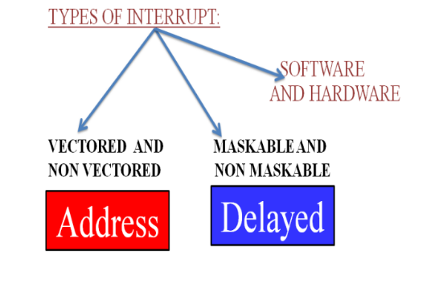
Vector and Non-Vector interrupt
- Vector interrupt: In this type of interrupt, the interrupt address is known to the processor. For example: RST7.5, RST6.5, RST5.5, TRAP.
The address to which program control is transferred are:
| Name |
Vectored address |
| TRAP |
0024 (4.5 X 0008) |
| RST 5.5 |
002C (5.5 X 0008) |
| RST 6.5 |
0034 (6.5 X 0008) |
| RST 7.5 |
003C (7.5 X 0008) |
- Non-Vector interrupt: In this type of interrupt, the interrupt address is not known to the processor so, the interrupt address needs to be sent externally by the device to perform interrupts. For example: INTR.
15
Maskable and Non-Maskable interrupt
- Maskable interrupt: In this type of interrupt, we can disable the interrupt by writing some instructions into the program. For example: RST7.5, RST6.5, RST5.5.
- Non-Maskable interrupt: In this type of interrupt, we cannot disable the interrupt by writing some instructions into the program. For example: TRAP.
The EI instruction is a one byte instruction and is used to Enable the maskable interrupts.
The DI instruction is a one byte instruction and is used to Disable the maskable interrupts
Software and Hardware Interrupt
- Software interrupt: In this type of interrupt, the programmer has to add the instructions into the program to execute the interrupt. There are 8 software interrupts in 8085, i.e. RST0, RST1, RST2, RST3, RST4, RST5, RST6, and RST7.
- Hardware interrupt: There are 5 interrupt pins in 8085 used as hardware interrupts, i.e. TRAP, RST7.5, RST6.5, RST5.5, INTR.
Note: INTA is not an interrupt, it is used by the microprocessor for sending acknowledgement. TRAP has the highest priority, then RST7.5 and so on.
5.3. Priority of interrupt
| Interrupt |
Priority |
| TRAP |
1 |
| RST 7.5 |
2 |
| RST 6.5 |
3 |
| RST 5.5 |
4 |
| INTR |
5 |
5.4. Interrupt Service Routine (ISR)
A small program or a routine that when executed, services the corresponding interrupting source is called an ISR.
16
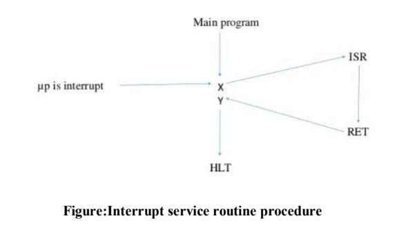
Figure: Interrupt service routine procedure
- 1. It allows the external devices to interrupt the normal program execution of the microprocessor.
- 2. When microprocessor receives interrupt signal, it temporarily stops current program and starts executing new program indicated by the interrupt signal.
- 3. Interrupt signals are generated by external peripheral devices like keyboard, sensors, printers etc.
- 4. After execution of the new program, microprocessor returns back to the previous program.
5.5. Interrupt structure of 8085
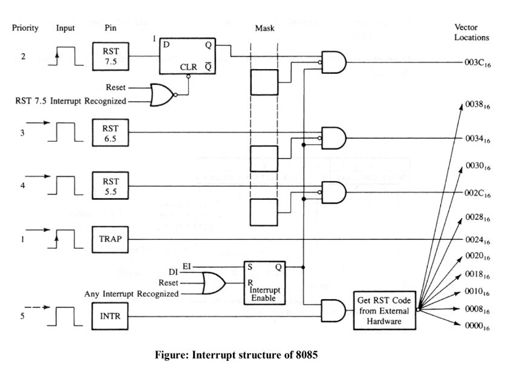
Figure: Interrupt structure of 8085
17
TRAP
It is a non-maskable interrupt, having the highest priority among all interrupts. By default, it is enabled until it gets acknowledged. In case of failure, it executes as ISR and sends the data to backup memory. This interrupt transfers the control to the location 0024H.
RST7.5
It is a maskable interrupt, having the second highest priority among all interrupts. When this interrupt is executed, the processor saves the content of the PC register into the stack and branches to 003CH address.
RST 6.5
It is a maskable interrupt, having the third highest priority among all interrupts. When this interrupt is executed, the processor saves the content of the PC register into the stack and branches to 0034H address.
RST 5.5
It is a maskable interrupt. When this interrupt is executed, the processor saves the content of the PC register into the stack and branches to 002CH address.
INTR
It is a maskable interrupt, having the lowest priority among all interrupts. It can be disabled by resetting the microprocessor.
When INTR signal goes high, the following events can occur:
- The microprocessor checks the status of INTR signal during the execution of each instruction.
- When the INTR signal is high, then the microprocessor completes its current instruction and sends active low interrupt acknowledge signal.
- When instructions are received, then the microprocessor saves the address of the next instruction on stack and executes the received instruction.
- The Interrupt Enable flip flop is manipulated using the EI/DI instructions.
- The individual masks for RST 5.5, RST 6.5 and RST 7.5 are manipulated using the SIM instruction. This instruction takes the bit pattern in the Accumulator and applies it to the interrupt mask enabling and disabling the specific interrupts